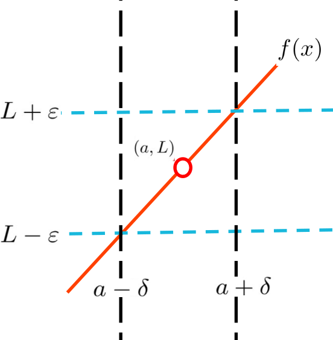
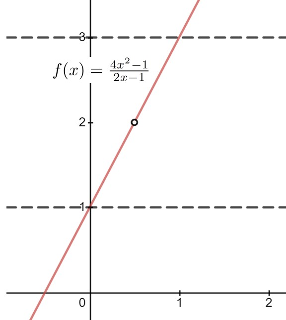

In the previous section we were focused on the relatively simple limits associated with horizontal asymptotes. But our goal is to use the limit in Definition 13.2.0.3 to prove that the Differentiation Rules we’ve been using are valid. To do that we will use the following precise, rigorous definition of a limit as \(x\rightarrow a\) where \(a\) is some real number.
Definition17.3.0.1.The Limit at a Point.
Suppose \(f(x)\) is a function, and that \(a\) is a real number. We say that
if and only if for every \(\eps\gt 0\) there is a \(\delta\gt 0\) with the property that whenever \(0\lt\abs{x-a}\lt \delta\text{,}\)\(\abs{f(x)-L}\lt \eps\text{.}\)
Take particular notice of the fact that neither Definition 17.2.0.13 nor Definition 17.3.0.1 tells us how to compute the limit. They serve only to rigorously establish what our intuition says the limit should be.
DIGRESSION: The Absolute Value, again.
It can be difficult to work with the absolute value inside of inequalities. To avoid these kinds of problems it is useful to remember that
\begin{align}
\abs{A}\amp{}\le B \amp{}\amp{}\text{ if and only if } \amp{}-B\le A\le B.\tag{17.4}
\end{align}
Although the second version looks slightly more complicated, it has the advantage that there are no absolute value symbols to trip us up.
We use Definition 17.3.0.1 the same way we used Definition 17.2.0.13: We take \(\eps\gt0\) as a challenge and find conditions which guarantee that \(\abs{f(x)-L}\lt\eps\text{.}\) Previously we were interested in the behavior of \(f(x)\) “close to infinity” so the condition was that \(x\gt B\) (that \(x\) was large enough, loosely speaking). Now we are interested in the behavior of \(f(x)\) “close to \(a\)” so we need to indicate how close \(x\) has to be to \(a\text{.}\) The \(\delta\gt0\) in Definition 17.3.0.1 plays the same role that the upper bound \(B\) played in Definition 17.2.0.13 and Definition 17.2.0.19. It locates where \(x\) must be in order to guarantee that \(\abs{f(x)-L}\lt\eps\text{.}\)
The sketch below depicts the situation when \(\limit{x}{a}{f(x)}=L\) visually. We have indicated that \(f(x)\) is not defined at \(a\text{,}\) but it could be. Limits don’t care what happens at \(a\text{,}\) only what happens near \(a\text{.}\) To emphasize this point we will usually say that \(0\lt\abs{x-a}\lt\delta\text{,}\) rather than \(\abs{x-a}\lt\delta\text{.}\) Because the inequality on the left is strict, we do not consider what happens when \(x=a\text{.}\)

As before \(\eps \) is the challenge. To show that the limit exists and is equal to \(L\) as claimed our task is to find a value of \(\delta\) such that, as long as \(% \overbrace{x \text{ is between } a-\delta \text{ and }a+\delta}^{x
% \text{ is within } \delta \text{ of } a, x\neq a}
x \) is between \(a-\delta \text{ and }a+\delta\) the corresponding \(f(x)\) will be between \(L-\eps \) and \(L+\eps \text{.}\)
More succinctly, we need to find \(\delta \gt 0\) such that if \(0\lt\abs{x-a}\lt\delta\) then \(\abs{f(x)-L}\lt\eps\text{.}\)
Visually, this means that the graph of \(f(x)\) will be between the dashed horizontal lines as long as \(x\) is between the dotted vertical lines.
Definition 17.3.0.1 is the culmination of approximately \(200\) years of attempts by some very brilliant people to provide a rigorous foundation for Calculus. Don’t expect to absorb this easily. It will take time and effort to fully understand and be able to use it. We will start simply.
\begin{equation*}
\limit{x}{\infty}{f(x)}=L \text{ if and only if }
\limit{x}{\infty}{(f(x)-L)}=0.
\end{equation*}
\begin{equation*}
\limit{x}{-\infty}{f(x)}=L\text{ if and only if
}\limit{x}{-\infty}{(f(x)-L)}=0.
\end{equation*}
\begin{equation*}
\limit{x}{a}{f(x)}=L\text{ if and only if
}\limit{x}{a}{(f(x)-L)}=0.
\end{equation*}
We are not looking for a formal proof, just a reasonable explanation.
Example17.3.0.3.
Observe that it is intuitively clear that if \(f(x)=-x^2+2\) then \(\limit{x}{0}{f(x)}=2\text{.}\) We wish to prove this rigorously.
Puzzle17.3.0.1.
Suppose \(\eps\gt0\) is given. Our goal is to find a \(\delta\gt0\) such that if \(0\lt\abs{x-0}\lt\delta\) (or just \(0\lt\abs{x}\lt\delta\)) then \(p \abs{f(x)-2}\lt \eps\text{.}\) Solving this for \(x\) we have
Notice that our proof does not give us any new information since it is intuitively clear that \(\limit{x}{0}{(-x^2+2)}=2\text{.}\) The formalism of a limit merely confirms, in a manner even Bishop Berkeley would accept, what we already know to be true.
Incidentally, since \(f(0)=-0^2+2=2\) we have also just proved that \(f(x)\) is continuous at \(x=0\text{.}\) See Definition 14.1.1.15.
For simple problems like this one the proof consisted of writing the algebraic steps from our Scrapwork backwards, as you see. This worked because every algebraic step in the Scrapwork was reversible. But don’t jump to conclusions. This will not always be the case.
Clearly the Scrapwork is the most important part of the solution process for this problem. In a very real sense it actually is the solution. We call it Scrapwork because it is the part of the work that you don’t show anyone else because it is messy and not well organized\aside{We kept it clean and orderly here so you could see the reasoning.}. The scrapwork is like the scaffolding used to construct a building. The proof is the building.
It is absolutely necessary to have the scaffolding while construction is ongoing but you tear it down and clean everything up before you move in. In the same way your proof should be a cleaned up version of your scrapwork. If this example were a homework problem, your solution would be the part that appears after Proof.
We had shown by an intuitive argument that \(\limit{x}{2}{f(x)}= 6\text{.}\) Our previous proof lacked rigor, especially in the last step. We will provide a fully rigorous proof now.
Proof.
Let \(\eps>0\) be given and take \(0\lt\delta\lt\frac{\eps}{3}\text{.}\) Then if \(0\lt \abs{x-2}\lt\delta\) we have
Notice that it is again irrelevant that \(f(2)=10\text{.}\)
Drill17.3.0.5.
Use the proof above to recreate the scrapwork that we did before we wrote the proof.
Example17.3.0.6.4.
We would like to find the value of \(\limit{x}{\frac12}{\frac{4x^2-1}{2x-1}}\text{,}\) and prove that the value we find is correct.
Remember that none of our limit definitions tell us how to find the value of a limit, only how to prove that it has a particular value after we’ve found it. In our examples so far the value of the limits have been intuitively clear so we haven’t concerned ourselves with this part of the problem. But before we can prove that a limit has a particular value we obviously need to decide what we believe the limit value is.
We have several options for doing this. The simplest is guessing, but guessing works best if we have some intuition about the problem. Guessing blindly is usually a waste of time. Nevertheless, guessing is always an option. Can you guess the value of this limit?
Another simple option is to use a calculator and plug the value of the limit point, in this case \(x=\frac12\text{,}\) and see what the calculator comes up with. This will work if the function is continuous at the limit point. But \(\frac{4x^2-1}{2x-1}\) is not continuous at \(x=\frac12\) so that won’t help with this problem. Try it and see.

A third, and much more useful option is to sketch the graph of \(f(x)\) to see what \(f(x)\) is close to near the limit point. The graph of \(f(x)=\frac{4x^2-1}{2x-1}\) is given at the right. It is not defined at \(x=1/2\) because when \(x=1/2\) we get zero in the denominator. Nevertheless the limit at \(x=1/2\) seems to exist. As you can see as \(x\) approaches \(1/2\text{,}\)\(f(x)\) appears to approach \(2\text{.}\) Based on this graph it seems likely that the value of the limit is \(2\text{.}\)
As we saw in Chapter 12, Algebra can also be very helpful. In this case we see that
Because we haven’t yet rigorously proved Theorem 14.1.1.1, Theorem 14.1.1.2, or Theorem 14.1.1.7 we can’t use them to construct a rigorous proof. Until they are proved they are not known, they are just believed. Belief is not knowledge.
But there is no problem with using them to gather evidence. So far we have strong evidence that this limit is \(2\text{.}\)
Having gathered our evidence, we now believe that \(\limit{x}{\frac12}{\frac{4x^2-1}{2x-1}}=2\text{.}\) Next we need to do the scrapwork for our proof.
Puzzle17.3.0.2.
As always we work backwards from our goal. We need to show that \(\abs{f(x)-2}\lt \eps\) so
A long list of inequalities like those in Proof 17.3.3 can be a little intimidating. Don’t let that stop you. Verify each transition from one inequality to the next. If you don’t see why a particular transition is valid refer back to the scrapwork.
DIGRESSION: Why We Prove Theorems.
The proof of any theorem will follow logically from the relevant definitions, lemmas, corollaries, and previously proved theorems. However, as we’ve seen proving that \(\limit{x}{\frac12}{\frac{4x^2-1}{2x+1}}=2\) from Definition 17.3.0.1 was very delicate and troublesome, and it only gave us one relatively insignificant limit. We’d really like to work more generally than this if we can.
We prove general theorems so that we can use them as tools. Do we have any tools (theorems) that would have made the proof of
Show that \(\tlimit{x}{\frac12}{\frac{4x^2-1}{2x+1}}\) satisfies all of the conditions of Theorem 12.4.2.1.
(b)
Use Theorem 12.4.2.1 to prove that \(\tlimit{x}{\frac12}{\frac{4x^2-1}{2x+1}}=2\text{.}\)
(c)
Is your proof in part (b) rigorous? Why or why not?
L’Hôpital’s Rule is a very powerful tool which simultaneously evaluates a limit and provides a rigorous proof of the result. And it is much easier to use than Definition 17.3.0.1.
But sadly, it will be of no use to us for the remainder of this chapter. L’Hôpital’s Rule relies on knowing that our differentiation rules are valid, and we don’t know that yet. That the differentiation rules are valid is exactly what we are trying to show. To use L’Hôpital ’s Rule would be to engage in circular reasoning, which is invalid.
END OF DIGRESSION
Example17.3.0.9.
In this example we will show rigorously that the derivative of \(f(x)=x^2\) is \(f^\prime(x)=2x\text{.}\) To do that we need to show that
Recall that differentiation is a local property so we are thinking of \(x\) as a fixed, but unspecified real number. The variable in this example is \(h\text{.}\)
Puzzle17.3.0.3.
For \(\eps\gt0\) we need to find \(\delta\gt 0\) such that if \(0\lt\abs{h}\lt\delta\text{,}\) then \(\abs{\frac{f(x+h)-f(x)}{h}-2x}\lt
\eps\text{.}\) Working backwards from this we have